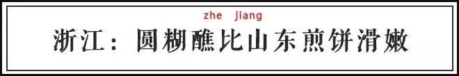

夏至日 | 馄饨、冷面、圆糊醮，大吃四方！
 251
251
文 | 猫斯图
又是一年的6月21日，夏至日又到了。
夏至在中外文明中都是最早被确定的节气，因为确定夏至日的天文方法特别简单：一年中木柱影子最短的一天就是夏至了。
夏至这一天的太阳在北半球投下最短的阴影，留下最长的白天。比如中国最北端的城市漠河，在夏至这一天会有长达17小时以上的白天，也因此成为游客云集之处。
不过所谓“夏至”，不仅仅是夏天到达了极点的意思。
《三礼义宗》解释：
“夏至为中者，至有三义：一以明阳气之至极，二以明阴气之始至，三以明日行之北至。故谓之至。”
也就是说，夏至日一到，大地上的阳气就到达了极点并开始衰退，阴气开始逐渐生发，太阳也到达了最北端。的确，从现代地理学上来看，从夏至之后，太阳从北回归线往南走，北半球的白天也就越来越短了。
冬至是中国传统意义上的鬼节之一，夏至则与之相对，是人间欢庆的日子。
唐代志怪笔记《酉阳杂俎》就记载，唐朝的人们在夏至这一天“进扇及粉脂囊”，妇女互相赠礼时还“皆有词”。
-
所谓的“扇”，就是扇子，可以帮助人们以一丝清凉度过难熬的盛夏时节；
-
所谓“粉脂囊”就是香袋，内装中草药和香料，可以驱蚊、防臭、提神，是夏天必不可少的装备。
为了对抗夏至带来的酷热，皇家甚至会向百官赏赐皇家冰窖里的冰块。到了宋代夏至更是成为公务员的国定假日，可以放假三天。人们对这个节气的重视由此也可见一斑。
除了制作各种防暑用品，夏至还是吃货们大吃一顿的好时机。
夏至一到，第一茬春麦就要收了，人们会用新麦制作各种各样的祭品贡献给老天爷，各地则根据物产不同，开发出了各有特色的夏至时令美食。

看到“面条”这两个字，不知道你有没有感到奇怪，这种小麦粉制作的食物为什么会和一个跟“脸”有关的字联系在一起。其实这是汉字简化之后造成的困扰之一，如果我们把“面条”里的“面”还原到繁体字就能看出端倪了。
现在很多面馆门口都会挂一块招牌，上书大大的“麵”字，这就体现了面条是由麦子制成的现状。其实这个字更古老的异体写作“麪 （miàn）”，从《说文》称这就是“麦末”的意思。面粉可不就是把麦子磨成末末吗？
中国北方有“冬至饺子夏至面”的说法， 意思是冬至那天要吃饺子以防耳朵被冻掉，夏至则要吃新麦子制成的面条感谢风调雨顺的上半年。
而且夏至日吃的面条还不是一般的汤面，而往往是冷面。
这是因为炎热季节的到来往往使人们身体燥热、心情烦躁，没有胃口吃滚烫的食物。凉面之类的生冷食品可以降火开胃，面食一般有碱，又不至于因为冷食而伤胃。
山东人吃的“过水面”，就是把面条煮熟后过三遍凉水和一遍饮用水制成的。倒上炸酱、卤子和蔬菜，这就是一碗夏季消暑开胃的美食。
老北京炸酱面自然也是夏至吃面的一时之选。有的人做炸酱面不喜欢过水，在夏至这一天也最好入乡随俗地用凉水抄一遍，这才有在炎炎夏日吃面的感觉。而东北人爱吃的朝鲜冷面在夏至这一天更是极为搭调的选择。
江苏人说：“夏至馄饨冬至团，四季安康人团圆。”
南北方的夏至和冬至习俗就不太一样。南方人冬至会吃汤圆，希望来年家人能依然团团圆圆；夏至则爱吃南方少有的几种面食之一：馄饨。
和薄皮大馅十八个褶的包子比起来，馄饨形状浑圆、无棱无角、人畜无害，像极了道家观念中宇宙出生时的“混沌”状态，因此被称为“混沌”。
后来因为是一种食品，才逐渐改偏旁部首为食字旁。馄饨的“饨”字据汉代辞书《方言》解：“饼谓之饨”，中国古代的面食统称为“饼”，馄饨一开始只是笼统地包括在面食领域当中，和饺子没有本质上的区别。
直到南宋时期两者才开始有了清楚的分野。南宋偏安于南方，很多北方官员举家南迁又无可避免地想念故土。他们开始划分水饺和馄饨的区别，以示南北方风土习俗上的差别。
苏南夏至所吃的馄饨是馄饨界一绝，用鲜猪肉、开洋（大虾米）、榨菜按特殊比例混合，一把包在薄嫩的馄饨皮里。
开水煮熟后放入鲜汤之中，撒上紫菜、虾皮、葱花。馄饨皮晶莹剔透、衬出里边粉红色的肉馅，汤头清新鲜美，又有鲜葱的香味搭配，真是让人欲罢不能。

醮（jiào）是道教祭祀术语，专指道教的祭典。《三国演义》第七十八回，群臣就奏请病危的曹操“大王当命道士设醮（jiào）修禳。”不过曹操是一个无神论者，后来没有理他们。
所谓的“圆糊醮”就是用新收的麦子制成祭品，设醮祭祀上天。早年间的浙江农户会把做好的圆糊醮或是面糊团子挡在水田田埂的缺口上，插着香祈求丰收。一边拜祭一边还要念念有词“夏至吃了圆糊醮，踩得石头咕咕叫”。

圆糊醮又称麦糊烧，虽说也是用面糊摊出来的一种薄煎饼，却由于面糊水分多、受热时间短，比它的兄弟山东煎饼滑嫩许多。
/早餐界霸主：山东煎饼/
而且和北方煎饼淡而无味的口味不同，圆糊醮还可以根据各人喜爱做成甜口和咸口的。摊完的饼柔软细腻，可以裹上辣酱、豆沙、果酱、番茄沙司等品尝，味道全在品尝者的一心。
等一下，说到夏至怎么能不提世界上最重视夏至日的地区：北欧呢？
北欧维度极高、气温寒冷、冬天漫长而昏暗。这种极端情况甚至导致北欧四国是世界上抑郁症发病率最高的地区之一。好不容易熬过了苦寒的日子迎来热烘烘的夏天，北欧人怎么能不好好庆祝一番？
北欧人在夏至附近会过仲夏节。首先看看仲夏节这个名字。古汉语中对兄弟姐妹的排名按次序是“伯仲叔季”，“仲”就是老二的意思。所谓仲夏，就是夏天三个月里边中间那个月，英语叫“midsummer”。
在这一天，北欧公司机关统统放假，人们举家在室外烧烤、围着花柱和篝火跳舞。这个习俗最早来自于北欧先民在夏至向爱神弗蕾亚和农神弗雷做的祈祷和献祭，后来便被固定下来，既使人们不再需要祈祷丰收也会庆祝这个节日。
北欧虽然是高福利国家，但是饮食文化实在是乏善可陈。这一点也可以理解，维京海盗们在乎的是食物是不是容易保存，才不会管口味如何呢。饶是如此，北欧的仲夏节大餐也让人大饱口福。

首先是瑞典盐腌鲱鱼排。
鲱鱼是北欧海岸边为数不多的物产之一，鱼肉鲜美细腻。可是这个腌鱼排算是瑞典一大黑暗料理，评价呈现强烈的两极分化，喜欢吃的人嗜之如命，不爱吃的人退避三舍。
原因嘛，和臭豆腐和榴莲一样，这玩意实在是太臭了。（比臭豆腐臭20倍）搭配薄面包干、洋葱和美酒，至少也是值得尝试一下的重口味。
接着，瑞典人的老邻居挪威人会端出一个水果拼盘来吸引你的眼球。高纬度地区长不出芒果、菠萝等热带水果，但是在林中却有位数甚众的莓子可以采摘。
树莓、蓝莓、蔓越莓、桑葚等都是稀松平常的货色，云莓才唱得起主角。云莓在北欧语言中的名称以“Molt”为词根，意为“融化”，极言其柔软多汁的口感。
丹麦人则从隔壁的德国人那里学来了对土豆莫名的热情。仲夏节吃的小土豆都是当季新鲜挖出来，小的只有拇指大小。正因为个头小、产量低，使得这种土豆价格特别高，不过既然是过节那也就无所谓花钱了。水煮小土豆自己就是一道美味佳肴。
虽说仲夏节在普遍寒冷的欧洲各国都大小算是个节日，把这个节过得跟过年似的看来也只有北欧人了。
来源：字媒体